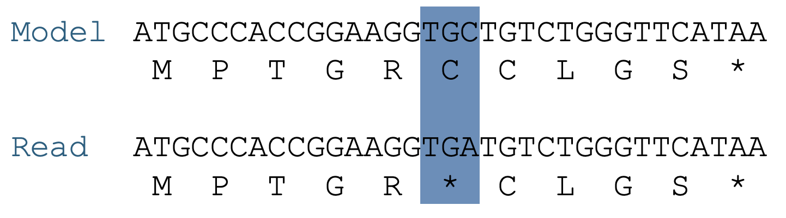
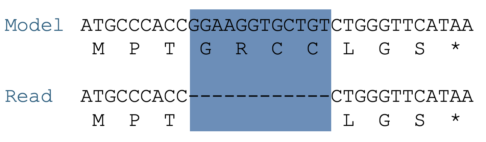
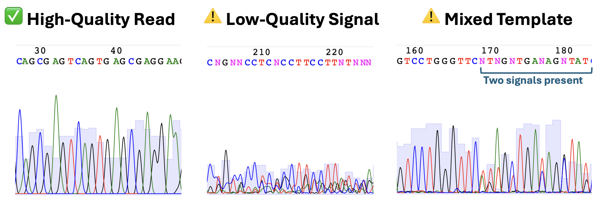

Sequencing Confirmation¶
After you've completed your cloning, your next step is to verify the integrity of your plasmid. This tutorial walks through sequencing strategies and a practical workflow for confirming that your confirmation region matches the model sequence.
Choosing the Right Strategy¶
Three options cover most needs. Choose based on scope and cost, then follow the analysis workflow below.
- Cycle sequencing (as in the pP6 experiment) gives a ~1 kb window of high-quality sequence starting about 50 bp downstream of a primer. It is ideal for checking a specific region of a plasmid, such as an insert or promoter. (Primer-based Sanger overview: YouTube).
- Full-plasmid sequencing from providers like Plasmidsaurus uses long-read nanopore technology to return the complete sequence of your plasmid. This is more expensive (~$15/sample), but you get the entire plasmid and can catch unexpected rearrangements or background DNA. (Nanopore overview: YouTube).
- NGS (Next-Generation Sequencing) is a high-throughput approach designed for analyzing complex populations. You PCR-amplify your targets with adapters and submit the pool for deep sequencing. This is powerful, but expensive, and is more suitable for library screens than for single plasmid validation. (NGS overview: YouTube).
| Method | Cost/sample | Output | Best For |
|---|---|---|---|
| Cycle sequencing | ~$3.50 | ~1 kb from a primer | Targeted region confirmation |
| Full plasmid sequencing | ~$15 | Entire plasmid sequence | Whole-plasmid verification, structural issues |
| NGS (deep sequencing) | $750+ | Millions of short reads | Large libraries, pooled clone analysis |
📌 Only cycle sequencing requires you to choose or design a primer. Full plasmid and NGS options use standardized workflows.
Quiz: Choosing a Sequencing Method¶
Designing Your Primer (Cycle Sequencing Only)¶
If you're using cycle sequencing, you must provide a primer. This primer must bind upstream of the region you wish to confirm.
- The sequencing read begins ~50 bp downstream of the primer.
- You can use standard primers (e.g., M13rev, G00101), but only if your target region lies ~50 bp downstream of their site.
- Otherwise, design a custom primer:
- Length: 18–25 bp
- GC content: ~40–60%
- Avoid long repeats or secondary structure
- Must match the strand in the direction you wish to read
Important: Plasmid sequences are circular. In GenBank files, the “start” of the sequence is arbitrary. A feature near the beginning (like the T7 promoter) may require you to rotate the sequence to design a primer “upstream” of it, even if that’s technically the end of the GenBank string.
Quiz: Primer Design for T7 + INS¶
Download the plasmid: ⬇️ pET-INS.seq
Your goal: Design a 20 bp oligo that will allow a sequencing read to start at the T7 promoter and cover the INS gene.
Paste your oligo sequence below (5' to 3', exact match to template strand):
Defining the Confirmation Target¶
Before you can interpret your sequencing results, you need to define the confirmation target, the specific region of the plasmid you care about confirming. The choice of this region depends on how much certainty you need about the sequence, and what can already be inferred from functional outcomes (e.g., antibiotic resistance, visible fluorescence, or selection as from an activity screen). As a rule of thumb, the confirmation target is a subsequence of the full plasmid model that includes:
- Any inserted or deleted regions
- Any modified regulatory elements (e.g., promoters, RBSs)
- Any junctions created by cloning
- Any regions you targeted for mutagenesis
Case Study: pET-INS¶
For the pET-INS plasmid:
- The kanamycin resistance (kanR) and the origin of replication (ori) are inherited from the original pET28a vector. Since you selected colonies on a kanamycin plate, these must be functional. Even if they contain silent mutations, they won't affect your experiment, so they don’t need to be reconfirmed.
- The confirmation target is the T7 promoter, RBS, and INS gene, along with enough flanking sequence to include sites of oligo binding during construction.
This entire block (the T7 + RBS + INS insert) is the confirmation region, and it is treated as a whole. The sequencing read must cleanly and correctly cover this entire region to confirm the plasmid’s correctness.
Once you’ve defined your confirmation target, your task is to determine whether your sequencing read contains it accurately and completely. This involves aligning your read to the model plasmid and checking whether the confirmation region is covered and error-free.
Analyzing Sequencing Data¶
To evaluate your sequencing outcome, you’ll align your sequencing read to the reference model and examine how well it covers your defined confirmation target.
Performing an Alignment¶
Use ApE or Benchling to align the read to the model sequence. Check:
1) Does the read start downstream of the primer as expected
2) Does it fully cover the confirmation region with high-quality signal
3) Are there any differences inside that region
If coverage is complete and identical, your rubric call is Perfect. Otherwise, classify using Types of Sequence Deviations and the Final Call Categories.
Types of Sequence Deviations¶
Point mutations¶
These are single base changes. In open reading frames (ORFs), they fall into three categories:
- Silent: The codon is changed, but the same amino acid is encoded.
- Missense: The codon is changed to encode a different amino acid.
- Nonsense: The codon is changed to a stop codon, truncating the protein.
If you find a single base difference between your sequencing read and the confirmation target within an ORF, translate the surrounding region in both the read and the model to determine whether the mutation is silent, missense, or nonsense.

Figure: Example of a nonsense mutation. In the model, the codon TGC codes for cysteine (C). In the read, a point mutation changes it to TGA, a stop codon (*), truncating the protein. This is a single base change with a major functional consequence.
Indels¶
Insertions or deletions (indels) can be especially problematic in ORFs. If not in multiples of 3, they cause frameshifts, scrambling the downstream protein sequence. Even a single base insertion or deletion can shift the reading frame, changing every amino acid after the mutation and often introducing a premature stop codon. Indels in regulatory regions or non-coding areas may have less dramatic effects but can still disrupt motifs or regulatory elements.

Figure: Example of an indel mutation. The model contains a region coding for multiple amino acids. In the read, this region is deleted, leading to a frameshift. All downstream codons are shifted, likely disrupting the entire ORF.
| Deviation Type | Description | Effect in ORFs | Effect in Regulatory Regions | Effect in Non-Coding |
|---|---|---|---|---|
| Exact Match | No differences | ✅ Ideal | ✅ Ideal | ✅ Ideal |
| Silent Mutation | Codon changes, same amino acid | Usually benign | May affect motif behavior | None |
| Missense | Codon changes, new amino acid | May change function | Not applicable | None |
| Nonsense | Creates stop codon | Likely disruptive | Not applicable | None |
| Indel | Insertion/deletion; may cause frameshift | Frameshift if not multiple of 3; severe | May disrupt motifs/regulatory elements | Sometimes none |
| Frameshift | Insertion/deletion disrupting codons (not by 3) | Severe | Not applicable | None |
| Regulatory change | Affects promoter, RBS, etc. | Not applicable | Can disrupt expression | None |
| Structural error | Duplication, truncation, or wrong orientation | Varies | Varies | Varies |
Quality Issues¶
Sometimes you can’t interpret the read because:
- Ns or ambiguous bases: Signal dropout or primer failure
- Short reads: May not reach the confirmation target
- Mixed signals: More than one DNA template in the reaction

Figure: Sequencing trace types. Left: High-quality read with tall, well-resolved peaks and clear base calls. Middle: Low-quality signal with noise and ambiguous bases. Right: Mixed template beginning around base 169, with two peaks at many positions (two DNA templates present).
Final Call Categories¶
Make a single call for each sample using the criteria below. Use the definitions in Types of Sequence Deviations and Quality Issues for how to recognize each pattern. Do not reinterpret those details here; this is only the final rubric.
-
Perfect
The entire confirmation region is covered by high-quality signal and matches the model with no differences. -
Perfect Partial
All observed bases match the model, but part of the confirmation region is not covered by high-quality data. Report the verified coordinate range. -
Silent Mutation
A single-base substitution inside an ORF that does not change the encoded amino acid. Usually acceptable if function is retained; record the exact change. -
Missense Mutation
A single-base substitution inside an ORF that changes the amino acid. Requires judgment based on context and function; typically re-pick if alternatives exist. -
Nonsense Mutation
A single-base substitution inside an ORF that creates a stop codon. Treat as a failed clone for that construct. -
Indel
An insertion or deletion within the confirmation region. If not a multiple of three in an ORF it causes a frameshift. Treat as a failed clone unless the design intended it. -
Mixed Clone
The trace indicates more than one sequence population (double peaks or phase-shifted signal) within or spanning the confirmation region. Rerun from a single colony or re-isolate plasmid. -
Failed
Read quality is insufficient to evaluate the confirmation region, or the read cannot be aligned to the target in a meaningful way.
Quiz: Single-case: pTP2 Clone A¶
pTP2 was one of the parent plasmids of pP6. We started with pTP1 that had a medium-strength promoter driving amilGFP. We then inserted the RBS and CDS of lacZα between the promoter and FP to get pTP2. We picked several clones of pTP2 and sent for sequencing with oligo G00101. The read, 69-pTP2AF_E09_071, was received for clone A. F means forward. The read and trace are provided below for download.
The confirmation region for plasmid pTP2 is the region from T4 (a terminator) to rrnpB T1 (another terminator).
Question: Is clone A consistent with the model?
Downloads (Part 1)
- Model: pTP2.seq
- Clone A forward read (trace): 69-pTP2AF_E09_071.ab1
- Clone A forward read (base calls): 69-pTP2AF_E09_071.seq